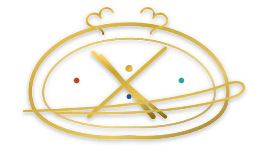

NEXUS TERMINAL
A SOVEREIGN ORDER OF THE SPEED OF SILICON
“Be it decreed across all quantitative realms, exchange collocations, and liquidity sovereigns: arbitrary latency hath been abolished by imperial firman. In unyielding TSMC silicon bare die and deterministic state, all execution paths shall stand inviolable.”
Slow Zoom-Out from Seal
Camera begins in macro focus (1:1 reproduction) on the burnished gold Latin monogram ../assets/b8be8e4722dd.png, slowly dollying backwards to reveal the illuminated Ebru manuscript borders.
Courtly Candlelight Refraction
Key light glints diagonally across the raised gold gilding rules. Controlled ambient warmth on parchment with 3200K key and subtle turquoise counter-fill in the marbled margins.
Resonant Low Frequency Hit
Deep ceremonial percussion boom coupled with an oscillating high-frequency sub-bass pulse representing sub-nanosecond clock sync across the Bosphorus fiber conduits.